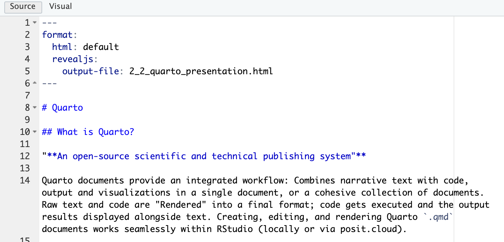
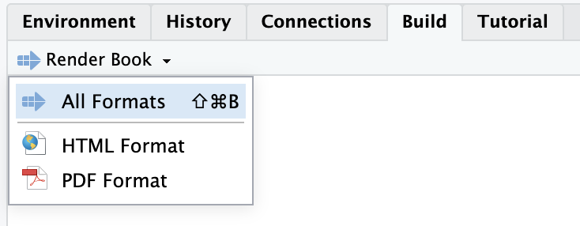
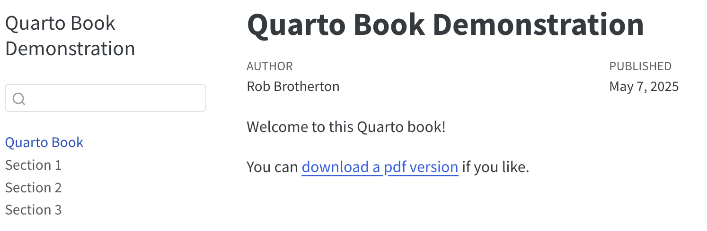

1 + 1[1] 2(-3)^2[1] 9Resources
I prepared an example of a Quarto document in a posit.cloud project you can access here:
“An open-source scientific and technical publishing system”
Quarto documents provide an integrated workflow: Combines narrative text with code, output and visualizations in a single document, or a cohesive collection of documents. Raw text and code are “Rendered” into a final format; code gets executed and the output results displayed alongside text. Creating, editing, and rendering Quarto .qmd documents works seamlessly within RStudio (locally or via posit.cloud).
Single documents
PDF article
Word document
HTML article
Presentation slides (html, ppt, beamer)
Collection of documents
Book (html and/or PDF)
Website (html pages, navigation)
Transparency: Bundles data, analysis, and interpretation together; good for open science and reproducibility.
Teaching materials: Create self-contained documents that combine theoretical explanations with coding instruction and examples.
Assignments: Students can execute and modify code and answer narrative questions within the same document, or create self-contained research reports combining narrative, code, and results.
Professional reporting: Generate publication-ready reports and presentations directly from your analyses.
Within a Project, click File > New File > Quarto Document
.qmd filesA .qmd will usually begin with a ‘YAML’ section. This is where various features of the document can be specified, like a title, author, output format, and various other things. This section is delineated with three dashes at the top and bottom.
Below the YAML, you can type regular text, just like in any other text editor.


Clicking between the “Source” and “Visual” modes (at the top-left of the editor) gives you an idea of what this document format does behind the scenes. “Source” mode shows you the raw document contents. Things like headers are created with a number of # symbols, and words are italicised by surrounding them with *asterisks*. for example. “Visual” mode hides much of this away and formats things more like Microsoft Word or Google Docs: headers are different sizes, words are actually italicized, etc.
Note that how the document looks in Visual mode is not necessarily exactly how it will look once rendered; Visual mode is just a pleasant and convenient way to edit the .qmd content.
The process of turning this raw, editable document into a finished, formatted version is called ‘Rendering’. There are a lot of formats you can render to, including html (webpage), pdf, docx for example. Look for the “Render” button at the top of the editor and click it to try it out.
By default, when rendering is complete the rendered version will open in a new tab or window. Often a pop-up warns you about this and you have to click “Try Again”.
My preference is to click the settings dropdown next to Render and select “Preview in Viewer Pane”. That way you get to see the Rendered version right next to the editor.
A Quarto document can include code (and its results) as well as text. To insert a code ‘chunk’ click Insert, then Executable Cell > R. You’ll see a grey cell into which you can type code, like this:
You can run lines of code interactively by clicking on a line and pressing cmd + return. You can run an entire code chunk by clicking the green ‘play’ button and the top-right of the chunk. When you click the Render button a document will be generated that includes both content and the output of embedded code.
Did you notice the |# label: I gave to the graph I made using ggplot earlier? That allows be to cross-reference it (see ?@fig-graph-of-descriptives).
You can include citations. From the Visual editor, click ‘Insert’, then ‘@ Citation’, then ‘From DOI’, and paste in your journal article’s DOI (something like https://doi.org/10.3389/fpsyg.2021.644657).
By default, the renderer will use the Chicago Manual of Style author-date format, but you can specify a custom formatting using CSL (Citation Style Language). Download apa.csl from the CSL style repository on GitHub and add csl: apa.csl to the ‘YAML’ options at the top of your document to format citations and references according to the latest APA style conventions.
[1] 4To report a result in-text, you can use in-line code. For example, the number I computed in that last code chunk was 2. I showed it here by typing “r number” with backticks around it instead of quotes.
To collect a number of .qmd documents together into a cohesive collection, a project and be turned into a Quarto book or website. Rather than each individual .qmd file that makes up the collection having its own individual YAML section to determine its format, the project as a whole gets a new file: _quarto.yml.
_quarto.yml_quarto.yml
project:
type: book
book:
title: "Quarto Book Demonstration"
author: "Rob Brotherton"
date: "5/7/2025"
chapters:
- index.qmd
- section_1.qmd
- section_2.qmd
- section_3.qmd
format:
html:
theme:
- cosmo
- brand
pdf:
documentclass: scrreprt
format-links: pdf
number-sections: false
df-print: kable
editor: visual
